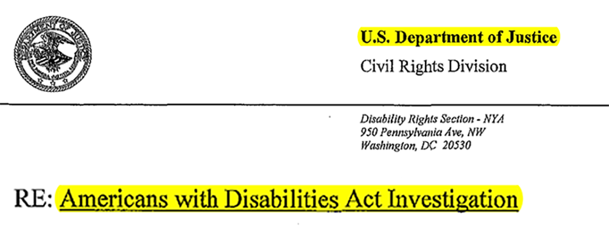
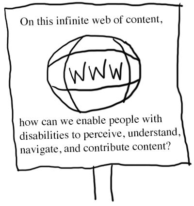

Intro to Web Accessibility
Dan Lewis
Clemson University
What is Web Accessibility?
Web accessibility means that people with disabilities can use the Web.
What is Web Accessibility? (continued)
More specifically, Web accessibility means that people with disabilities can perceive, understand, navigate, and interact with the Web, and that they can contribute to the Web.
Not just blind people
- Visual
- Cognitive
- Auditory
- Physical
- Speech
- Neurological
Why? Appeal to Authority
ADA: Americans with Disabilities Act
- Prohibits discrimination and ensures equal opportunity for persons with disabilities
- Requires reasonable accommodations be provided in meeting the needs of individuals with disabilities
Rehabilitation Act
Section 504
- Federal law to protect individuals with disabilities in programs that receive federal financial assistance
- This includes any college or university that receives federal financial assistance
Rehabilitation Act
Section 508
- 1998 Amendment to the Rehabilitation Act
- Requires federal agencies to make their information technology accessible to people with disabilities
International Law
- Australia: Disability Discrimination Act of 1992
- France: Law for the equality of rights and opportunities, the participation and citizenship of people with disabilities
- Germany: Federal Ordinance on Barrier-Free Information Technology
- Ireland: Irish National Disability Authority IT Accessibility Guidelines
- New Zealand: E-Government initiative
- ...the list goes on
Why? Human Rights
To enable persons with disabilities to live independently and participate fully in all aspects of life
To ensure that persons with disabilities can exercise the right to freedom of expression and opinion
Why? The Future You
We're all just temporarily abled.
Cindy Li
Design for the Future
Why? Accessibility Benefits Everyone
- Some disabilities are temporary or situational: concussion, broken limb, or carrying grocery bags
- Many accessibility features benefit those without disabilities: captions, voice dictation, zoom
Why? Appeal to Emotion
Why? Nerd Sniping

A person wearing a hat is sitting in a chair and begins speaking to a bystander.
Person in Hat: There's a certain type of brain that's easily disabled.
If you show it an interesting problem, it involuntariliy drops everything else to work on it.
This has led me to invent a new sport: nerd sniping.
See that physicist crossing the road?
Hey!
The Person wearing the hat holds up a sign that reads: On this infinite grid of ideal one-ohm resistors, what's the equivalent resistance between the two marked nodes?
Physicist: It's... hmm. Interesting. Maybe if you start with... No, wait. Hmm... You could...
(A truck zooms by.)
Bystander: I will have no part in this.
Person in Hat: C'mon, make a sign. It's fun! Physicists are two points, mathematicians three.
Nerd Sniping Accessibility
Reading Comments on Instagram
Clemson's Home Page
How?
- Automated Testing
- Manual Testing
Automated Testing: Pros
- Quick: can scan a lot of code at once
- Provides a good baseline
- May catch errors that were otherwise overlooked
- Can report some errors with certainty (i.e. missing alternative text)
Automated Testing: Cons
- False positives; false negatives
- Many errors require human analysis
- Not as thorough as manual testing
- Alternate text: accurate? decorative?
- Difficulty determining color contrast
- Difficulty with complex widgets & rich content
- Nuances between screen readers and browsers
Manual Testing
- There's no substitute for a human
- Manual testing can be tedious
Tools: WAVE Toolbar
- Identifies common errors and warnings
- Summarizes accessibility features
- Provides structural information, ability to toggle CSS, and contrast checks
Tools: Google Accessibility Developer Tools
- Adds accessibility audit and elements tab to dev tools
- Can audit dynamically generated content
- Provides links to detailed error descriptions
Tools: High Contrast Mode
- Shows websites in high contrast mode
- Affects users with low vision
- Colorblind people may benefit
- Helpful for people sensitive to light
Tools: Color Contrast Checkers
- Ensures color contrast is sufficient for low vision users
Tools: Chrome Lens
- Simulates visual deficiencies
- Track path of a screen reader user
Screen Readers
- JAWS
- NVDA
- VoiceOver
- Window-Eyes
- ZoomText
Screen Reader / Browser Combos
- JAWS with IE
- NVDA with Firefox
- VoiceOver with Safari
- Window-Eyes with IE
- ZoomText with IE